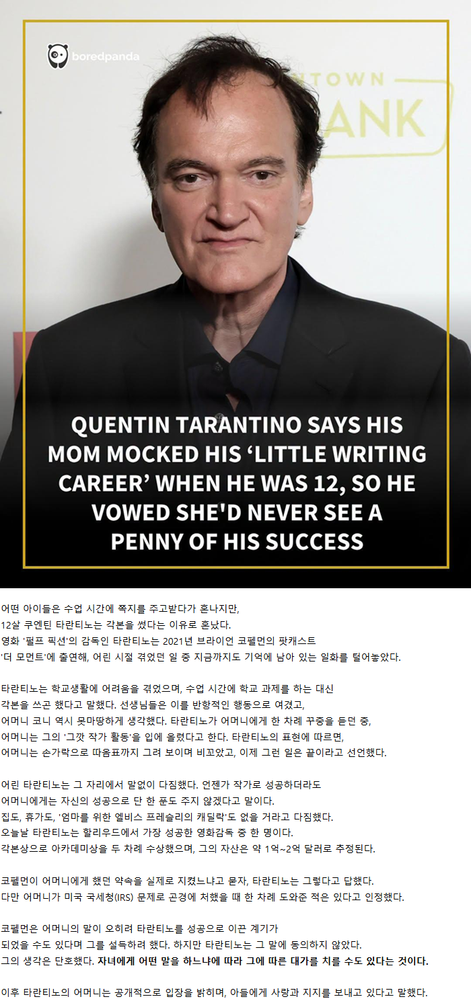
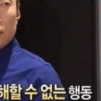

거장 엄마들은 정서가 비틀리는게 디폴트인가..
예술은 가난과 불우함으로 영감이생김
평범하고 정상적인 사람은 예술을 하지않아
내면에 강력한 결핍과 정신병을 품은 사람만이 그걸 해소하기 위해 예술을 하지
쿠엔틴 타란티노 성격보면 본인이 이상하게 약간 비틀리기도 함 ㅋㅋㅋㅋㅋ
엄마가 16에 낳아서 혼자 키우느라 존나 힘들었겠구만 꽁해가지고
지가 좋아서 낳은걸 왜 타란티노한테 전가하며
혼자 키우느라 존나 힘들었으니 무슨말을 해도 이해해주라?ㅋㅋㅋ
뒤쳐지네
그 힘든 스트레스를 애 꿈 비꼬는걸로 풀었으니 꽁할만하지 ㅋㅋ
없는 사람은 있는 사람을 욕함
있는 사람은 욕한 사람에게 나누지 않음
그래서 없는 사람들은 더 화남
이거 모든 역사에 동일하게 적용됨
아냐 욕 안해도 안나눠줌....
근데 저 새낀 존나 많이 가지고 있으면서
지한테 은혜 준 사람들 욕하잖아
왜 관계없는 이야기 하고 있냐?
힙합을 그만 둔 이유
둘다 이해는 가네
엄마는 니 낳고 얼마나 귀여워했을지 ㅉㅉ
논란들보면 확실히 네츄럴 병신인건 명백함
세치혀로 인생을 망쳤네
곱게 말하자 다들
무쌩겨써 ㅋㅋ
성공해서 저러는거고 일반적인 정서학대를 받으면 그냥 스트레스 받는 멘헤라 직장인이 됨
솔직히 부모 입장에서는 정도를 따라가도록 때로는 모질 정도로 행동하는게 맞잖아
중학생 자식이 공부 안하고 예체능에 인생 건다고 고집부리면 험한말 자제하기 힘들듯
때린것도 아니고 먹이고 입히고 용돈주고 재워주는데 저정도 소리도 못할거면 부모라는게 뭐임..
쫌생이새끼... 16살에 낳아서 혼자 키웠으면 공부 안한다고 혼내는게 아니라 밖에서 돈 안벌어오고 공부한다고 혼냈을수도 있는건데.
비호감으로 유명하다더만 이유를 알겠네
어릴때의 치기어린 다짐은 어릴때에 끝나야
어릴때 안끝내고 끝까지 유지했으니 작품특유의 애새끼 망상같은걸 밀어붙여 성공한거 아니냐 ㅋㅋ
생긴거부터가 존나 반골이잖아
엄마가 응원해줬으면 딴거했음
ㅋㅋㅋㅋㅋ


킬빌로 이소룡을 우려서 돈벌고
원스어폰어타임어쩌구하는 좆같은 영화로
이소룡을 모욕한거 보고 욕했는데
이건 뭐 어마어마한 씹새끼네
와 댓글반응들 뭐임
이걸 타란티노를 욕하고 애미편을드네
어릴 때 받은 씻을 수 없는 상처가 마음에 균열을 만드는건데..
최근 논란때문에 ㅋㅋ 욕먹을짓을 해서
ㅋㅋㅋ 그러니까.
쓰레기인 부모가 생각보다 많다는걸 경험안해본 사람들은 영원히 설득이 불가능함
타란티노같은 좀생이에 미친듯이 예민하고 극도로 정신불안한 놈에게 어머니가 한 행동은 견딜 수 없을 정도의 모멸감과 정신적 학대였을거다.. 이후 그 행동에 대한 사과와 개선의 노력도 없었겠지 타란티노 영화가 보여주는 특유의 감성이 도대체 어디서 나올까 했는데 요즘에야 이해가 간다....
쿠엔틴 타란티노 성격보면
엄마보다 쿠엔틴 타란티노가 더 성격 꼬인 애일 확률이 더 높음
황혼에서 새벽까지
그때로 돌아와 줘...
저게 기억에 남는 결정타이긴 했겠지만,
거의 모든 행동에 대해서 엄마가 저런 식으로 반응했을걸
엄마가 힘들었고 안힘들었고를 떠나서 애한테 저런말하는건 잘못된거임
왜 다 애미편 드는건지 이해가 안가네
지 혀로 지 팔자 꼰거잖아
타란틴 쿠엔티노 그렇게 안봤는데 재능이 있었구나
쫌생이